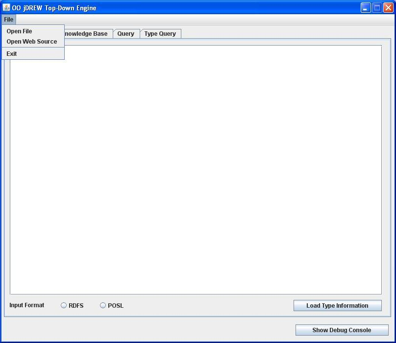
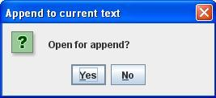
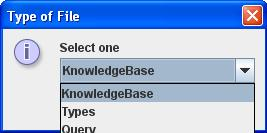
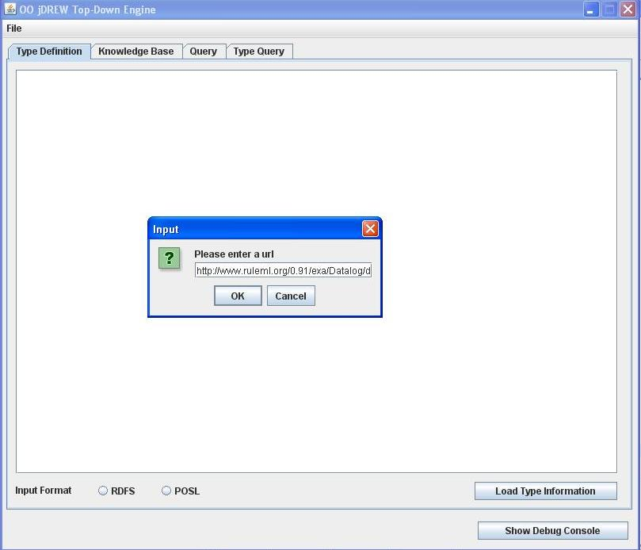
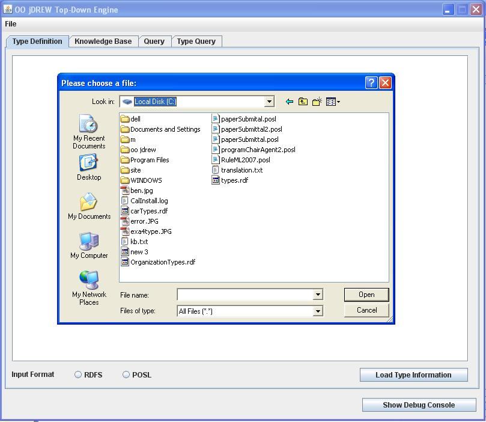
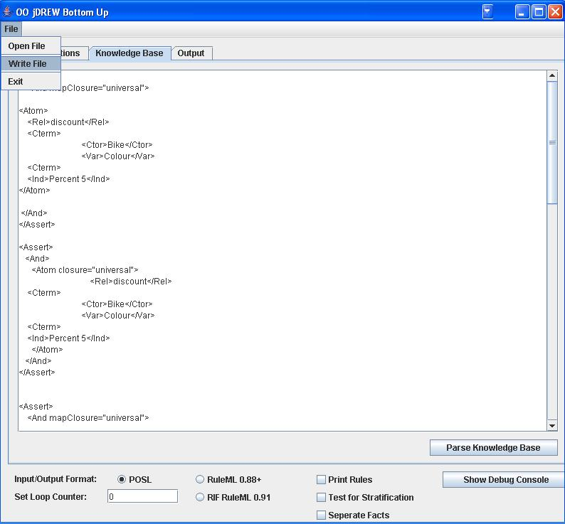
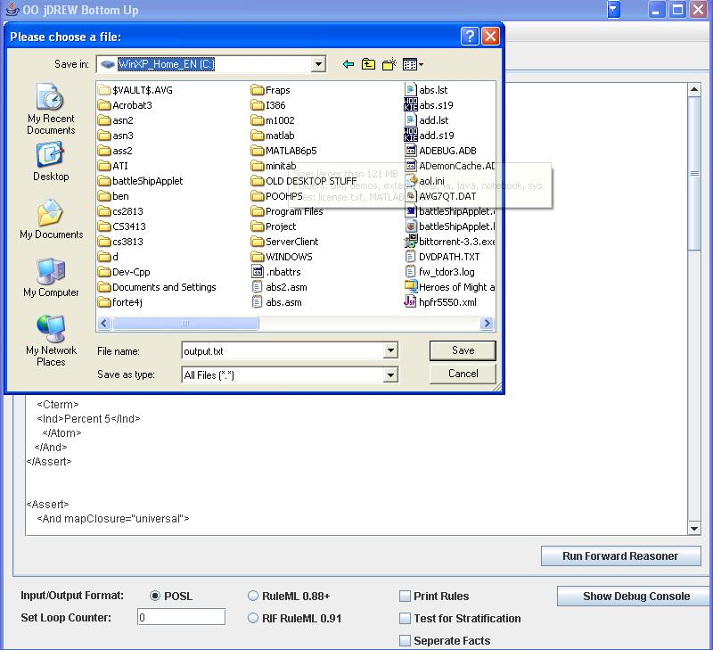

| > Home |
| > Documentation |
| > Downloads |
| > Online Demo |
| > Contact |
How To Read a POSL, RDFS, RuleML file from an online source or a hard disk.
When you click on file, a menu will appear that will allow you to open either a web source or a local file.
Then there will be an option to append the file to the current file in place or to over write the file.

Then you can select to either open a Type, Knowledgebase or a Query file.

If you choose to open a web source you must supply a URL to the file.

If you choose to open a local file you can browse to the file and open it.

How To write an output file in the Bottom-Up engine
When you click on file, there will be an option to write a file.
You can then browse to where you want to save the file at, the file must also be given a name.

Now the output from running the BU engine is stored in a file.
Last Updated:
October 29, 2006
By:
Ben Craig